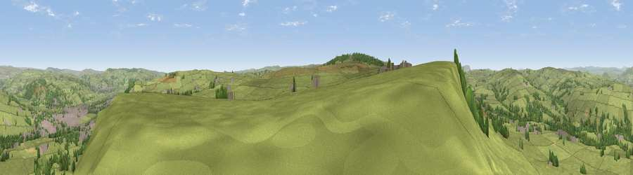

Viewpoint near Sutton
#9597 in England · top 9% of its area beats it · near SuttonWhere it is
The exact computed spot (SD 99125 43025). Click the marker for map links.
The view, rendered

A 360° render of this exact spot computed from the terrain model, tree cover and land cover — summer colours, afternoon light, calibrated against photographs of famous viewpoints. Real trees, hedges and buildings will differ in detail.
The panorama
Grey silhouette: terrain skyline in each direction (720 bearings, Earth curvature and refraction included). Dashed green: skyline with trees (+15 m) and buildings (+8 m) as obstacles. Blue strip: how far the ground is visible on each bearing.
Where the view opens
Wedge length = distance to the farthest visible ground on that bearing (vegetation-aware). Rings at 10, 25 and 50 km.
What fills the view
88% grassland · 8% woodland · 3% built-up
Angular shares of the visible panorama (visual magnitude), not map area. Landscape diversity 0.20 (0–1 Shannon).
Key numbers
More beautiful places nearby
The staircase of upgrades: each row has a higher view potential than everything closer. Driving times are estimates from straight-line distance, calibrated against real road routing — check an actual route before setting out.
| Place | Direction | Drive | Score |
|---|---|---|---|
| Viewpoint near Cowling | WSW · 1 km | ~2 min | 65.0 |
| Viewpoint near Lothersdale | NW · 6 km | ~13 min | 70.5 |
| Lad Law (Boulsworth Hill) | SW · 10 km | ~19 min | 71.5 |
| Sharp Haw | NNW · 13 km | ~23 min | 72.7 |
| Viewpoint near Embsay | N · 13 km | ~24 min | 74.5 |
| Cracoe Fell | N · 16 km | ~28 min | 75.1 |
| Viewpoint near Barley | W · 19 km | ~32 min | 76.3 |
| Pendle Hill | W · 19 km | ~32 min | 76.5 |
53.88341, -2.01480 · source: screening · position refined by local search. Computed location — check access rights before visiting.